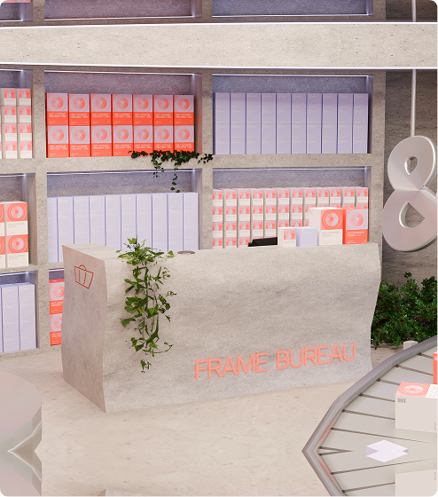
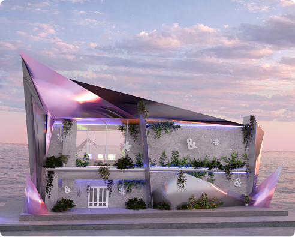
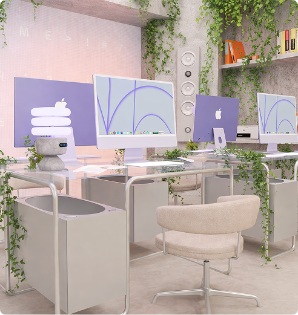
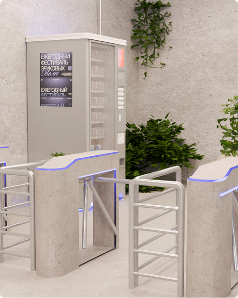
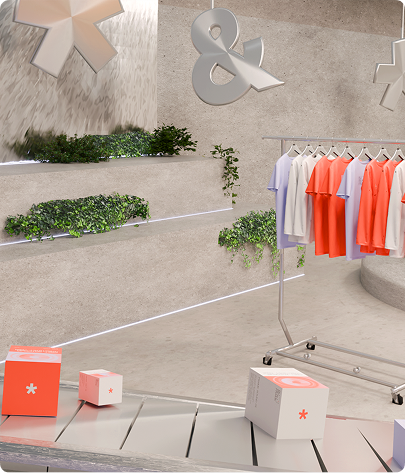
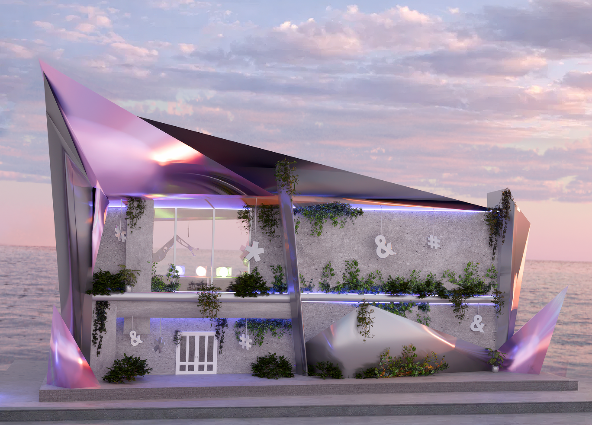
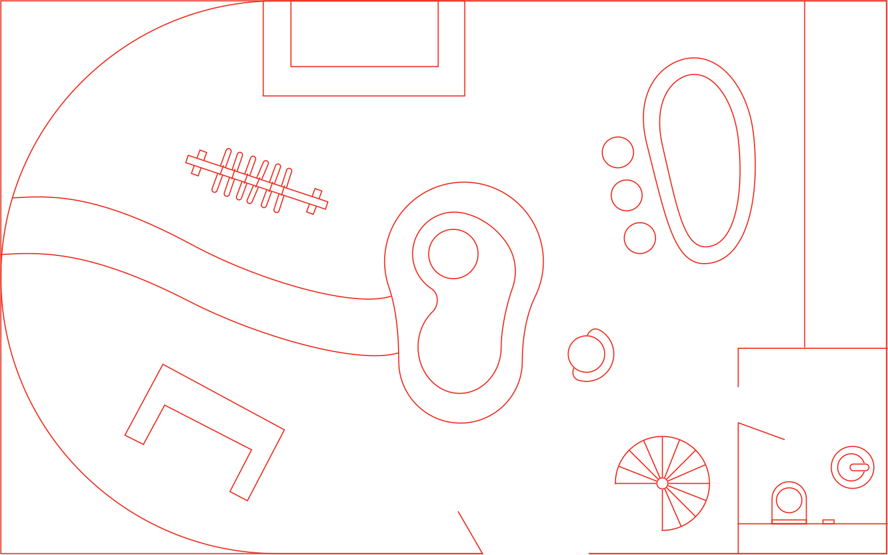

Пространство центра










Лекционный зал для публичных программ • Аудиолаборатория для мастер-классов и исследований • Магазин изданий и объектов центра • Кафе как пространство неформального общения • Лекционный зал для публичных программ • Аудиолаборатория для мастер-классов и исследований • Магазин изданий и объектов центра • Кафе как пространство неформального общения • Лекционный зал для публичных программ • Аудиолаборатория для мастер-классов и исследований • Магазин изданий и объектов центра • Кафе как пространство неформального общения • Лекционный зал для публичных программ • Аудиолаборатория для мастер-классов и исследований • Магазин изданий и объектов центра • Кафе как пространство неформального общения •
Пространство
центра
Центр спроектирован как последовательность зон, каждая из которых предлагает отдельный способ взаимодействия со звуком. Здесь звук можно слушать, изучать, собирать, обсуждать и проживать телесно — через движение, паузу, концентрацию или отдых.
Каждая зона имеет собственный акустический сценарий: от тихих участков для восстановления до пространств, где звук становится материалом для работы и эксперимента.

